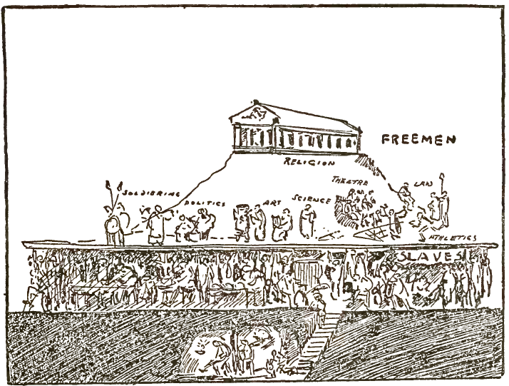
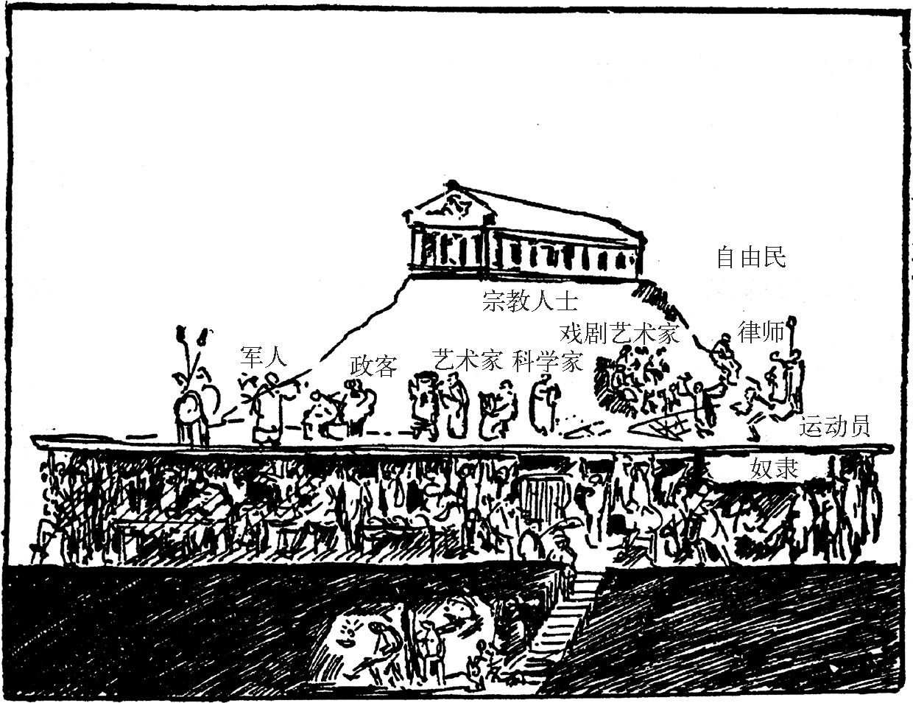

From The Story of Mankind
节选自《人类的故事》第十六章 古希腊自治
But how, you will ask, did the ancient Greeks have time to look after their families and their business if they were forever running to the market-place to discuss affairs of state? In this chapter I shall tell you.
看到这里，你可能会问：“如果希腊人成天在市集议论国家大事，哪里还能有时间照看家人和自己的生计呢？”接下来我就要为你解答这个疑问。
In all matters of government, the Greek democracy recognised only one class of citizens—the freemen. Every Greek city was composed of a small number of free born citizens, a large number of slaves and a sprinkling of foreigners.
在希腊的政府体制中，所谓民主只适用于人民中的一类——自由市民，而每个城邦中都只有一小部分人是自由市民，大多数都是奴隶，外加零星几个外国人。
At rare intervals (usually during a war, when men were needed for the army) the Greeks showed themselves willing to confer the rights of citizenship upon the “barbarians” as they called the foreigners. But this was an exception. Citizenship was a matter of birth. You were an Athenian because your father and your grandfather had been Athenians before you. But however great your merits as a trader or a soldier, if you were born of non-Athenian parents, you remained a “foreigner” until the end of time.
只有在极少数的情形下（通常是在战争时期，军队兵源紧缺的时候），希腊人才会愿意把公民资格颁发给被他们蔑称为“野人”的外国人。公民身份通常都是由出身决定的，只有当你的父母以及他们的父母都是雅典人的时候，你才有资格成为雅典人。反过来说，如果你没有生在雅典人的家庭里，无论你有多高明的商业才华或者战斗本领，你都只能一辈子当个“外国人”。
The Greek city, therefore, whenever it was not ruled by a king or a tyrant, was run by and for the freemen, and this would not have been possible without a large army of slaves who outnumbered the free citizens at the rate of six or five to one and who performed those tasks to which we modern people must devote most of our time and energy if we wish to provide for our families and pay the rent of our apartments. The slaves did all the cooking and baking and candlestick making of the entire city. They were the tailors and the carpenters and the jewelers and the school-teachers and the bookkeepers and they tended the store and looked after the factory while the master went to the public meeting to discuss questions of war and peace or visited the theatre to see the latest play of AEschylus or hear a discussion of the revolutionary ideas of Euripides, who had dared to express certain doubts upon the omnipotence of the great god Zeus.
希腊城邦的统治权总是在国王、僭主和自由市民之间轮换，倘若没有大量的奴隶在默默地为他们服务，这是根本不可能发生的事情。奴隶和公民的比例通常是五六个比一个，前者的职责和我们现代人为了养家糊口所做的工作一样。奴隶们不仅要为全城的公民做饭和制作蜡烛，还身兼裁缝、木匠、银匠、教师、会计等多种职务。如果身为公民的店主或作坊主需要去市集商讨军国大事，抑或想要去观赏埃斯库罗斯的最新剧目，或者想要旁听欧里庇德斯质疑宙斯神权的惊天大论，那么照看店铺和看管作坊的职责就落在了奴隶肩上。


Indeed, ancient Athens resembled a modern club. All the freeborn citizens were hereditary members and all the slaves were hereditary servants, and waited upon the needs of their masters, and it was very pleasant to be a member of the organisation.
古代的雅典就如同一个大型的现代俱乐部，所有自由市民生来就是其中的会员，奴隶们则只能世代为仆，听凭会员差遣。即便如此，能够成为俱乐部的一分子已经足以让很多奴隶心满意足了。
But when we talk about slaves, we do not mean the sort of people about whom you have read in the pages of “Uncle Tom’s Cabin.” It is true that the position of those slaves who tilled the fields was a very unpleasant one, but the average freeman who had come down in the world and who had been obliged to hire himself out as a farm hand led just as miserable a life. In the cities, furthermore, many of the slaves were more prosperous than the poorer classes of the freemen. For the Greeks, who loved moderation in all things, did not like to treat their slaves after the fashion which afterward was so common in Rome, where a slave had as few rights as an engine in a modern factory and could be thrown to the wild animals upon the smallest pretext.
我们这里所谈及的奴隶们可不是你在《汤姆叔叔的小屋》里所读到的那些可怜人。的确，有些奴隶过着在田里耕作的悲惨生活，不过同样也有境遇不佳的自由市民被迫在他人的农场里打工。尤其是在城市里，不少奴隶甚至比破落的自由市民更加富庶。崇尚中庸之道的希腊人和后来的罗马人不同，他们不会把奴隶等同于现代工厂里的机器一样当做是没有生命的工具，更不会动不动就把奴隶抛给野兽当晚餐。
The Greeks accepted slavery as a necessary institution, without which no city could possibly become the home of a truly civilised people.
希腊人把奴隶的存在视为必要的社会结构，认为没有奴隶就不可能有真正的文明城市。
The slaves also took care of those tasks which nowadays are performed by the business men and the professional men. As for those household duties which take up so much of the time of your mother and which worry your father when he comes home from his office, the Greeks, who understood the value of leisure, had reduced such duties to the smallest possible minimum by living amidst surroundings of extreme simplicity.
在现代社会里由商人和专业工人所完成的工作，在当时都是由奴隶来负责的。至于那些让你的妈妈头疼、让白天工作晚上回家还得帮忙的爸爸烦心的家务劳动，懂得休闲的希腊人则采取能省则省的态度，安于过着最简单的生活。
To begin with, their homes were very plain. Even the rich nobles spent their lives in a sort of adobe barn, which lacked all the comforts which a modern workman expects as his natural right. A Greek home consisted of four walls and a roof. There was a door which led into the street but there were no windows. The kitchen, the living rooms and the sleeping quarters were built around an open courtyard in which there was a small fountain, or a statue and a few plants to make it look bright. Within this courtyard the family lived when it did not rain or when it was not too cold. In one corner of the yard the cook (who was a slave) prepared the meal and in another corner, the teacher (who was also a slave) taught the children the alpha beta gamma and the tables of multiplication and in still another corner the lady of the house, who rarely left her domain (since it was not considered good form for a married woman to be seen on the street too often) was repairing her husband’s coat with her seamstresses (who were slaves,) and in the little office, right off the door, the master was inspecting the accounts which the overseer of his farm (who was a slave) had just brought to him.
首先，希腊人的居室十分朴素。即使是富裕的贵族也同样居住在仓库一般的房子里，不具备任何现代人视为最基本人权的居住条件。希腊人的房子就是四面墙加一个屋顶，只有大门却没有窗户。厨房、客厅和卧室都围绕在一个庭院的四周，中间通常建有一座小型的喷泉或者一尊雕像外加一些植物作为陪衬。只要是不下雨的时候或者天气不太冷的话，全家人都会在院子里活动。院子的一角是厨子（当然是个奴隶）准备饭食的地方，而在另外一个角落，教师（也是奴隶）则在教孩子们数学语文。余下的两个角落，一个属于女主人，她很少离开这个区域（因为已婚的妇女如果经常在街上抛头露面会被视为有失检点），通常都在和侍女（还是奴隶）一起缝补她丈夫的衣服，大门边上还设有一个小型的办公区，男主人会在这里审阅自己农场的监工（还是奴隶）为他报送的账目。
When dinner was ready the family came together but the meal was a very simple one and did not take much time. The Greeks seem to have regarded eating as an unavoidable evil and not a pastime, which kills many dreary hours and eventually kills many dreary people. They lived on bread and on wine, with a little meat and some green vegetables. They drank water only when nothing else was available because they did not think it very healthy. They loved to call on each other for dinner, but our idea of a festive meal, where everybody is supposed to eat much more than is good for him, would have disgusted them. They came together at the table for the purpose of a good talk and a good glass of wine and water, but as they were moderate people they despised those who drank too much.
全家人会一同享用晚餐，但食物极其简单，根本用不了多长时间就吃完了。希腊人把吃饭看作躲不过的麻烦事，绝非什么享受，不仅浪费时间，更无助于长寿。除了面包和葡萄酒之外，他们也会吃点肉和蔬菜。除非家里实在没有酒了，他们才会喝水，因为希腊人认为水对身体不好。他们还喜欢在用餐的时间相互串门，但绝对不会像我们现代人过节时那样暴饮暴食，他们觉得那样做很恶心。他们之所以聚餐是为了伴着美酒哪怕是白水高谈阔论，身为适度原则的信奉者，他们鄙视任何酗酒的人。
The same simplicity which prevailed in the dining room also dominated their choice of clothes. They liked to be clean and well groomed, to have their hair and beards neatly cut, to feel their bodies strong with the exercise and the swimming of the gymnasium, but they never followed the Asiatic fashion which prescribed loud colours and strange patterns. They wore a long white coat and they managed to look as smart as a modern Italian officer in his long blue cape.
希腊人的简约精神不仅仅体现在饮食上，也反映在他们的着装上。他们喜欢保持整洁干净，发型和胡须都必须打理得一丝不苟，而且爱好锻炼和游泳，但不会效仿外国人去穿什么五颜六色的奇装异服。一袭白袍的希腊人看上去丝毫不比身披蓝色风衣的现代意大利军官逊色。
They loved to see their wives wear ornaments but they thought it very vulgar to display their wealth (or their wives) in public and whenever the women left their home they were as inconspicuous as possible.
他们喜欢看到自己的妻子佩戴饰物，却鄙视任何形式的炫富（或者炫夫人）行为，因此女人每次外出都尽量打扮得不引人瞩目。
In short, the story of Greek life is a story not only of moderation but also of simplicity. “Things,” chairs and tables and books and houses and carriages, are apt to take up a great deal of their owner’s time. In the end they invariably make him their slave and his hours are spent looking after their wants, keeping them polished and brushed and painted. The Greeks, before everything else, wanted to be “free,” both in mind and in body. That they might maintain their liberty, and be truly free in spirit, they reduced their daily needs to the lowest possible point.
总而言之，希腊人所追求的中庸生活不仅仅是适度的，更是简约的。他们认为物质的东西，例如桌椅板凳、书籍房屋、车马座驾都只会让它们的主人分心，使得人反被东西奴役，整天为了这些身外之物而当牛做马。无论是在肉体上还是精神上，希腊人都把“自由”看得高于一切。他们通过把日常需要降到最低，以换取身心自由的境界。